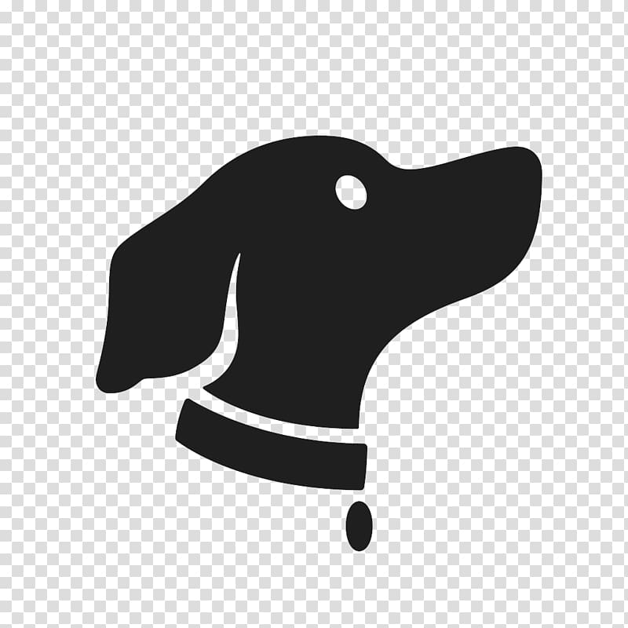

| דף הבית סרטונים אודותיי צור קשר |  |
גל מזרחי - מאלפת כלבים וכלבנית טיפולית |
|
|---|---|
אז מה זה כלבנות טיפולית?טיפול בעזרת כלבים או כלבנות טיפולית היא שיטת טיפול ייחודית המשלבת בתוכה מרכיבים חברתיים, חינוכיים, פסיכולוגיים ושיקומיים בעזרתם של הכלבים. השיטה הטיפולית מיועדת לאוכלוסיות שונות כגון נוער בסיכון, הפרעות קשב וריכוז, אוטיזם, אלימות במשפחה, CP, קשישים ועוד בעלי צרכים מיוחדים.הקשר בין בני האדם לכלבים הוא הדוק ביותר. הכלבים ניחנים ביכולת לתקשר, לעורר רגשות ולהסיר מחסומים רגשיים. יכולות אלו מהוות בסיס להיעזרות בכלבים לטובת טיפול באנשים. המפגש בין כלבים לבני אדם מאפשר נתינה וקבלת אהבה, מספק חיזוקים חיוביים וחווית הצלחה ובכך תורם לשיפור רווחתו הנפשית והפיזית של המטופל. התקשורת עם הכלב היא תמיד חלקה וזורמת, אין מצבים של איום ואין חשש מפני ביקורת או שיפוטיות. בנוסף, מסוגל הכלב להרעיף אהבה ומגע נעים וזה מאפשר למטופל להיפתח בלי חסמים. הכלבנות הטיפולית מעצימה את הטיפול בתהליכים פיזיולוגיים, קוגניטיביים, חברתיים, תקשורתיים ורגשיים, באמצעות שיטת טיפול המותאמת למגוון רחב של מטופלים בעלי צרכים מיוחדים. באמצעות האילוף והמרחב הטיפולי אנו מתאימים מטרות טיפוליות לכל מטופל. מטרות טיפוליות כדוגמת העלאת הבטחון העצמי, ארגון וסדר, התמודדות עם תסכולים, התמדה, דחיית סיפוקים, הרחבת טווח קשב וריכוז ועוד. |
שני הכלבים שלי - מייפל ומאנץ' רק מחכה לשחק אתכם... אם יש לך חטיף ביד אני אעשה מה שאתה רוצה! |
בין האוכלוסיות שניתן לטפל בהן בעזרת כלבנות טיפולית:
|
|
בין המטרות הטיפוליות בעזרת כלבים:
|
|